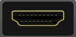
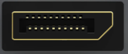
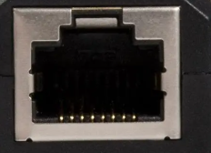
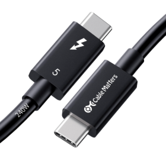

¿Qué es un conector de computadora?
Un conector es una interfaz física o lógica que permite la comunicación y transferencia de energía, datos o señales entre dos dispositivos electrónicos. En una PC, los conectores son los "puertos" que ves en la placa base, tarjetas gráficas, monitores, teclados, etc.
Existen cientos de tipos, pero solo unos pocos dominan el mundo moderno: USB-C está reemplazando a casi todos, mientras que PCIe, HDMI y RJ45 siguen siendo imprescindibles.
Haz clic en cualquier tarjeta para verla en detalle →

USB-C (Type-C)
El conector universal. Reversible y capaz de todo.

HDMI 2.1
8K, 120Hz y audio inmersivo.

DisplayPort 2.1
El más rápido para monitores.

PCIe 5.0 x16
128 GB/s para GPU y SSD.

RJ45 (Ethernet)
Hasta 40 Gbps con Cat8.

SATA III
6 Gbps para discos clásicos.

Thunderbolt 5
120 Gbps sobre USB-C.
Cuestionario Interactivo
5 preguntas • ¡A ver cuántas aciertas!